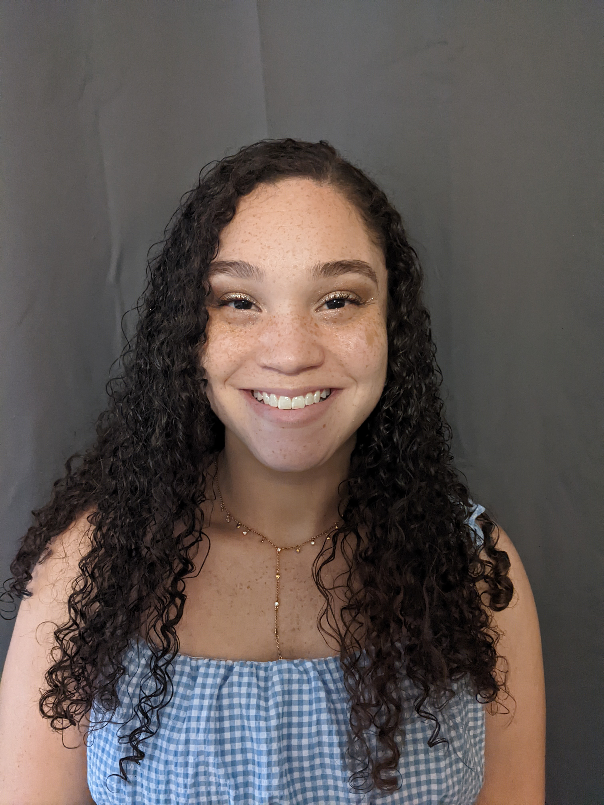

Summary:
Detail-oriented Analytical Chemist with a strong background in compound testing that specializes in high pressure liquid chromatography
Education:
- Queens University of Charlotte, Charlotte, NC | Bachelor of Science | Major in Biology, Minor in Chemistry-Graduated December 2017 - Alumni Scholar
Work Experience:
Research and Development Chemist for Speciality Chemical Intermediates- Chase Corporation (Jan 2023- Present)
- Mange projects involving a diverse range of wet chemistry and physical property analyses to guide project development and decision-making.
- Interact with all levels of our organization and others, with a focus on close collaboration with other research teams.
- Assist in the synthesis of new polyurethane dispersions and customer requested materials.
- Aid the Scale-Up trial process and commercialization efforts for new products.
Volatile Organic Comopond Testing Engineer for Third Party Automotive Testing- MGA Research Coropration (June 2022- October 2022)
- Performed highly detailed analysis of car parts and whole components for volatile organic compounds using HPLC and GC-MS, meeting the precise requirements outlined in ISO standards.
- Took a proactive role in maintaining laboratory cleanliness and ensuring proper chemical waste disposal.
- Consistently delivered accurate chemical analysis results on materials to confirm the absence of toxic substances, with strict adherence to regulatory guidelines.
Quality Control Chemist for Nurtaceutical Vitamin Manufacturing Facility- Earth's Creation USA (April 2021-April 2022)
- Demonstrated analytical knowledge by utilizing HPLC, LC-MS, and other advanced techniques to analyze raw materials and finished products for quality and stability in a fast-paced environment.
- Managed instrument calibrations, repairs, and maintenance within the quality lab and cGMP facility.
- Enhanced quality control by developing, composing, and editing over 30 Standardized Testing/Operating Procedures (STPs/SOPs).
Quality Control Chemist I- Cosette Pharmaceuticals (April 2020-Jan 2021)
- Maintained FDA-regulated product quality through rigorous application of wet chemistry testing methods.
- Produced comprehensive written reports in alignment with USP-NF testing procedures.
Chemical Lab Technician I (Temporary Position)- Clariant Corporation (July 2019-April 2020)
- Played an instrumental role in client satisfaction by participating in the development of specialized chemical blends, ensuring they met precise client specifications.
- Facilitated client understanding of surfactant and adjuvant blends through the creation of detailed customer presentations.
Skills
- Chemistry- Thin layer chromatography, titrations, distillation, separations, reflux reactions, dissolution, HPLC, LC-MS, GC-MS, UV-VIS, FT-IR, Karl Fischer Titration
- Biology- Aseptic and sterile technique, bacterial staining and identification, Micro and Coliform analysis, Seeding and inoculation, DNA and RNA extraction, polymerase chain reactions (PCR), gel electrophoresis
- Instruments- Karl Fischer, Malvern Particle Size Analyzer, Mettler Toledo Automatic Titration, Agilent HPLC, Agilent Infinity LC-MS SQ, Agilent GC-MS, Brookfield DV-II
- Programs- QuickBooks, SAP, Descriptive statistics and parametric testing with Megastat and R, Agilent ChemStation, Agilent OpenLab CDS, LIMS, Mass Hunter, Microsoft Office
Contact Me